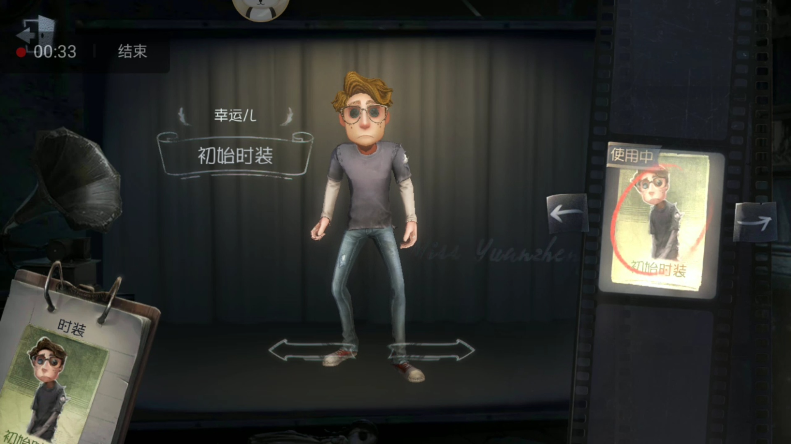

幸運兒

【人物介紹】
不知有多少人參加了這個遊戲，他也是其中之一。
【能力介紹】
幸運兒：一無所有的傢伙能活下來當然是靠運氣啦，每次開箱子前可許願本次想獲得的道具，可大幅提升獲得該道具的機率。
莊園老友：參與過遊戲的老手，比新人更警覺，每次受擊後獲得的加速時間延長2秒。
幸運兒是初始角色之一，沒有初始道具，但開箱子有高機率可以拿到想要的道具。沒有正面加乘的狀態，但相對的也沒有負面狀態，是一個很均衡的角色。